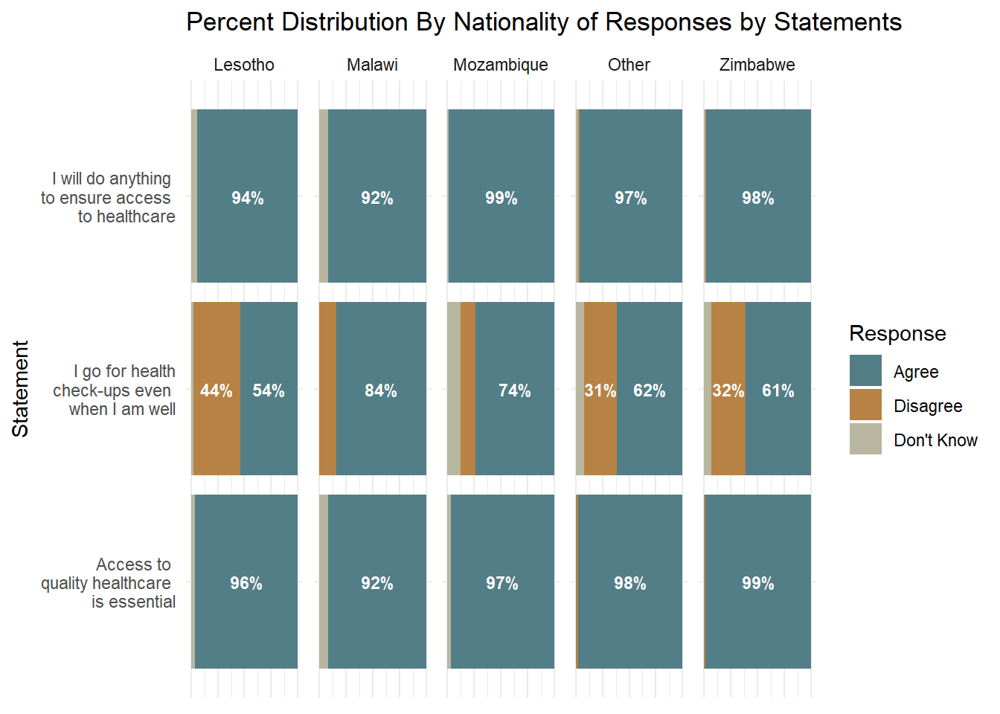

[1] 3Utano Market Survey Report
Introduction
This report presents the latest findings from the Utano Market Survey, conducted by UlwaziHUB Consulting Services in South Africa. The survey, which targeted a diverse population, was administered online between May 30 and June 5. A total of 391 responses were recorded. However 384 have been considered as valid records while 3 are responses from participants that did not give consent to the survey. The remaining 3 have been considered as missing values. Thus, the achieved response rate is 99.7%. The respondents providing valuable insights into current market trends, healthcare access, and service preferences. The data collected serves as a critical foundation for understanding the needs and expectations of communities, and will inform the design and delivery of more inclusive and responsive health-related services.
Methods
The Utano Market Survey employed a cross-sectional study design and was conducted entirely online using a structured digital questionnaire. The survey instrument was developed in English and translated into additional local languages to improve accessibility and comprehension. A combination of purposive and snowball sampling techniques was used to recruit participants through social media platforms, community networks, and digital outreach by local partners.
The questionnaire included both closed- and open-ended questions covering themes such as demographics, health-seeking behavior, service delivery preferences, and perceived barriers to healthcare. Data collection was anonymous, and participants provided informed consent electronically before beginning the survey. All data were securely stored and analyzed using statistical software to produce descriptive and inferential insights, including cross-tabulations and chi-square tests for associations between key variables such as gender and nationality.
Results
Section A: Demographic Characteristic of the Respondents
This section presents the demographics and distribution of the results
The sampled respondents were from 16 nationalities with 193 (50.1 %) of them being females and the remaining 185 (48.1 %) being males. Table @@@@ shows a breakdown of the nationalities that responded by gender.
Table 1: Distribution of Males and Females by CountryNationality | Female (n %) | Male (n %) |
|---|---|---|
Zimbabwe | 95 (60%) | 63 (40%) |
Mozambique | 26 (30%) | 60 (70%) |
Lesotho | 25 (52%) | 23 (48%) |
South africa | 24 (55%) | 20 (45%) |
Malawi | 12 (55%) | 10 (45%) |
Kenya | 2 (40%) | 3 (60%) |
Nigeria | 0 (0%) | 2 (100%) |
Botswana | 0 (0%) | 1 (100%) |
Eswatini | 0 (0%) | 1 (100%) |
Gambia | 0 (0%) | 1 (100%) |
Other | 0 (0%) | 1 (100%) |
Angola | 1 (100%) | 0 (0%) |
Congo kinshasa | 2 (100%) | 0 (0%) |
Ghana | 1 (100%) | 0 (0%) |
Namibia | 4 (100%) | 0 (0%) |
Tanzania | 1 (100%) | 0 (0%) |
1 (100%) | 0 (0%) | |
Total | 194 (51%) | 185 (49%) |
A chi-square test of independence was conducted to examine the relationship between gender and nationality among participants. The analysis revealed a statistically significant association between gender and nationality,p = 0.002. This suggests that the distribution of gender differs significantly across nationalities in the dataset. The observed differences were supported by the cross-tabulated counts and row-wise percentages, with variations noted particularly in the proportions of males and females within each nationality group.
The overall average age for the survey respondents was 35.1 years. The females’ average age was 35.4 years and the males’ average age was 34.6 years. Majority of the survey participants that currently lived in South Africa as shown in Table @@@ were based in Pretoria followed by Johannesburg and then Capetown which seems to be in line with the order of launching the business model in question with Pretoria being the city where the health service product will be launched first and followed by the rest of Gauteng. Looking at the participants’ current location by nationality indicated that the largest proportions of each of the focus nationalities (Zimbabwe, Mozambique, Lesotho, Malawi) currently reside in Pretoria.
| Current location where respondent lives | Frequency | Percent |
|---|---|---|
| Bojanala Platinum District | 1 | 0.3% |
| Buffalo City Metropolitan Municipality | 1 | 0.3% |
| Capetown | 22 | 7.2% |
| Central Karoo District | 2 | 0.7% |
| Chris Hani District | 12 | 3.9% |
| City of Cape Town Metropolitan Municipality | 2 | 0.7% |
| City of Ekurhuleni Metropolitan Municipality | 8 | 2.6% |
| City of Johannesburg Metropolitan Municipality | 42 | 13.7% |
| City of Tshwane Metropolitan Municipality | 191 | 62.2% |
| Ehlanzeni District | 2 | 0.7% |
| Garden Route District | 1 | 0.3% |
| Gert Sibande District | 1 | 0.3% |
| Lejweleputswa District | 1 | 0.3% |
| Mopani District | 2 | 0.7% |
| Nkangala District | 1 | 0.3% |
| OR Tambo District | 2 | 0.7% |
| Sedibeng District | 4 | 1.3% |
| West Rand District | 3 | 1% |
| eThekwini Metropolitan Municipality | 4 | 1.3% |
| uMzinyathi District | 1 | 0.3% |
| NA | 4 | 1.3% |
Fifty percent of the non-South African nationalities respondents have been in South Africa for over five years while the second largest proportion of 37.5% have been in lived in South Africa for 1 - 5 yrs followed by those who have lived for 6 months - 12 months at 9.1% and then those that have been in South Africa for less than six months making up the remaining 3.4%. When the length of stay in South Africa was disaggregated by gender there did not seem to be a significant difference in the proportions by length of stay. However, disaggregating the length of stay by nationality, more Zimbabweans and Basotho tended to have been in South Africa for over 5 years (61.2% and 50% respectively) while a larger percentage of Malawians and Mozambicans indicated having lived in South Africa for 1 - 5 years.
| education_level | formal | informal | ownbusiness | unemployed |
|---|---|---|---|---|
| none | 9.7% | 51.6% | 22.6% | 16.1% |
| primary | 15.8% | 47.4% | 19.7% | 17.1% |
| secondary | 8.8% | 54.4% | 14.4% | 22.4% |
| tertiary | 66.1% | 0.0% | 17.3% | 16.5% |
| vocational | 6.2% | 62.5% | 12.5% | 18.8% |
| Total | 29.6% | 34.7% | 17.1% | 18.7% |
Overall, the majority of respondents have attained either tertiary (33.9%) or secondary (33.2%) education, reflecting a generally high level of educational attainment within the target population. However, a notable proportion—8.2%—reported having no formal education, highlighting the need for tailored communication strategies that accommodate varying literacy and comprehension levels within the market. As presented in Table @@@, 29.6% respondents reported being formally employed, while 17.1% indicated they operated their own business—together reflecting substantial engagement in formal income-generating activities. In contrast, 34.7% were employed in the informal sector, and 18.7% of the sampled population were recorded as unemployed. These findings suggest that market segmentation strategies should consider the varying levels of financial stability and purchasing power across these groups, with tailored approaches for formally employed and business-owning segments, while accounting for the unique needs and constraints of the informally employed and unemployed populations. An analysis of occupational status by nationality reveals that the majority of Basotho respondents were unemployed (36.2%). On the other hand, the highest proportions of Malawian (76.0%), Mozambican (36.9%), and Zimbabwean (38.7%) respondents were engaged in informal employment. For respondents classified under ‘Other’ nationalities, the largest share was found to be formally employed.
SECTION B: Healthcare Needs & Usage.
Measuring healthcare importance and usage.
To assess the importance placed on healthcare and its utilization, the target population was asked to respond to the following three statements:
- Access to quality healthcare is essential for me to live a productive and fulfilling life.
- I will do whatever it takes to ensure access to healthcare for myself and my family.
- I go for health check-ups even when I am not feeling unwell.

The respondents’ overwhelming agreement with “access to quality health is essential” and “I will do anything to ensure access to healthcare” shows the high value on access to quality healthcare. Such strong sentiments suggest that the targetted population placess strong importance on healthcare that is of quality, and is also accessible and will be willing to engage with service that offers such qualities. “I go for health check-ups even when I am well”, which assesses health-seeking and preventative health behavior, received r% agreement, r% disagreement, and r% uncertainty, reflecting a more mixed view compared to the consistently high agreement observed in the other two statements. This disparity may point to limitations in preventative health practices, potentially driven by affordability or access barriers. It suggests that a significant portion of the population may only seek healthcare when they are already ill, rather than engaging in routine preventive care.
qn_8_table_nat_gender <-
qn_8_statements %>%
filter(!is.na(Response)) %>%
group_by(nationality_recode,
Statement,Response) %>%
summarise(Count = n()) %>%
mutate(Proportion = round(Count/sum(Count) * 100,0))`summarise()` has grouped output by 'nationality_recode', 'Statement'. You can
override using the `.groups` argument.qn_8_table_nat_gender %>%
mutate(Statement = case_when(Statement == "access_quality" ~ "Access to quality healthcare is essential",
Statement == "ensure_access" ~ "I will do anything to ensure access to healthcare",
Statement == "routine_checkups" ~ "I go for health check-ups even when I am well" ),
Response = case_when(Response == "agree" ~ "Agree",
Response == "disagree" ~ "Disagree",
Response == "dontknow" ~ "Don't Know")) %>%
ggplot() +
aes (y = Statement, x = Proportion, fill = Response) +
geom_col(position = "fill") +
geom_text(aes(label = ifelse(Proportion > 5, paste0(round(Proportion), "%"),"")),
position = position_fill(vjust = 0.5),
color = "white",
size = 3,
fontface = "bold") +
scale_fill_paletteer_d("fishualize::Acanthisthius_brasilianus") +
scale_x_continuous(labels = scales::percent_format(accuracy = 1)) +
labs(
title = "Percent Distribution of Responses by Statements",
x = "Statement",
y = "Percentage",
fill = "Response"
) +
facet_wrap("nationality_recode", nrow = 1) +
theme_minimal()
SECTION C: Willingness to sign up for the product.
Understanding how different genders engage with various service types can provide valuable insights into consumer preferences and accessibility. This analysis explores the distribution of male and female preferences across different service types.The chart highlights a clear gender difference in service preferences. Females predominantly chose Gold, Platinum, and Silver services, with Gold being the most favored. In contrast, males showed a stronger preference for Lithium services, demonstrating a noticeable skew toward this option. This pattern suggests potential gender-driven trends that could inform service customization and marketing strategies
Understanding how different Nationality engage with various service types can provide valuable insights into consumer preferences and accessibility.The chart below highlights how employment status influence service preferences. Those in the informal sector predominantly chose Gold while those in the formal sector,show stronger preference in Lithium, Platinum and Silver services.
Language Preference and Choice of Healthcare Provider – Gender Disaggregation
The majority of both female and male respondents indicated that language plays a significant role in their choice of healthcare provider, with 163 females (50%) and 160 males (50%) agreeing with this statement. A smaller proportion disagreed—17 females (57%) vs. 13 males (43%)—suggesting that more females than males feel language is important, though the numbers remain relatively low. Among those who were uncertain, the response was balanced, with 6 females (46%) and 7 males (54%) indicating they didn’t know whether language influences their provider choice. Overall, 366 respondents participated in this assessment, with a slightly higher representation of females (51%) than males (49%).
This suggests that language is a key consideration for both genders when selecting a healthcare provider, highlighting the importance of language-concordant care in health service delivery (Table below)
Language | Female | Male | Total |
|---|---|---|---|
Agree | 163 (88%) | 160 (89%) | 323 (88%) |
Disagree | 17 (9%) | 13 (7%) | 30 (8%) |
Dont know | 6 (3%) | 7 (4%) | 13 (4%) |
Total | 186 (100%) | 180 (100%) | 366 (100%) |
Gender | Female | Male | Total |
|---|---|---|---|
Agree | 114 (61%) | 114 (64%) | 228 (62%) |
Disagree | 68 (36%) | 58 (33%) | 126 (35%) |
Dont know | 6 (3%) | 5 (3%) | 11 (3%) |
Total | 188 (100%) | 177 (100%) | 365 (100%) |
keypopulation | Female | Male | Total |
|---|---|---|---|
Agree | 125 (67%) | 140 (78%) | 265 (73%) |
Disagree | 32 (17%) | 21 (12%) | 53 (15%) |
Dont know | 29 (16%) | 18 (10%) | 47 (13%) |
Total | 186 (100%) | 179 (100%) | 365 (100%) |